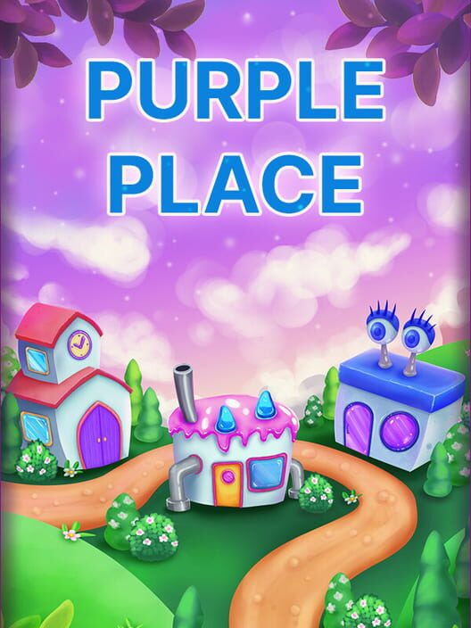

Purble Place
Purble Place é uma coleção de jogos casuais para crianças, desenvolvida pela Oberon Games, que consiste em três minijogos: Comfy Cakes, Purble Shop e Purble Pairs.
O objetivo principal é desenvolver habilidades como raciocínio lógico, coordenação e memória, enquanto se diverte com gráficos coloridos e personagens cativantes.

Descrição
Purble Place é um conjunto de três jogos infantis educativos que vêm incluídos nas versões do Windows Vista e Windows 7.
Os jogos são desenvolvidos pela Oberon Media para a Microsoft e visam entreter e ao mesmo tempo estimular o raciocínio lógico das crianças
Os jogos são: "Comfy Cakes", "Purble Pairs" e "Comfy Cakes", que são versões para crianças de jogos de memória, de combinação de roupas e de fazer bolos, respectivamente.